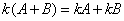
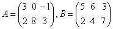
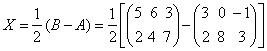
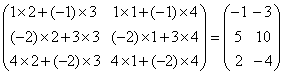
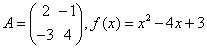
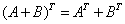

2.2 矩阵的运算
一、矩阵的加法
例如 由定义知：只有同型矩阵才可以相加，且矩阵加法实质上是对应元素相加，与两个行列式相加有本质区别。 矩阵加法满足下列运算律： （1）交换律 （2）结合律 （3） （4）消去律 （5）设，称为A的负矩阵，则由此可定义矩阵的减法： 例如： |
二、数量乘法
例如 由定义可知：数k与矩阵A的数乘运算是用k去乘A中每一个元素，它与数k与行列式的相乘又是完全不相同的。 矩阵的数乘运算满足下列运算律： （1）结合律 为任意两数。 （2）分配律 ，。 |
|
例1：已知，求矩阵X，使 解：  |
三、矩阵的乘法
|
先看一个例子： 设，我们来求AB（说A为左矩阵，B为右矩阵）。矩阵乘法的关键是：左矩阵的 行与右矩阵的列对应相乘再相加，现把A的三个行与B的两个列分别对应相乘再相加后得到矩阵：  这就是A乘以B的乘积矩阵，即： 由此例可知：欲进行矩阵A与B的乘法运算，必须要求左矩阵A的列数与右矩阵B的行数相同，而乘积矩阵的行数就是左矩阵的行数，乘积矩阵的列数就是右矩阵的列数。
|
|
例2：设。求AB与BA。 解：先求AB，这里A作为左矩阵是3×3矩阵，B作为右矩阵是3×2矩阵，因而AB是有意义的。 而BA没有意义，因为B的列数与A的行数不相同。 例3：设，求AB与BA 解：由A与B均为2阶方阵，所以AB与BA都有意义。 |
|
由矩阵乘法定义以及上述例题，矩阵的乘法与两个普通数的乘法是有所不同的。 注意： （ⅰ）一般情况下，矩阵乘法不满足交换律，即一般地 （ⅱ）由AB=0并不能推出A=0或B=0，因而不满足消去律，即由AB=AC，一般地不能推出B=C。 我们只是说一般地，，但对某些矩阵A，B，有可能AB=BA，这时我们说A与B可交换，例如设，可验证A与B可交换。 显然只有同阶方阵才可能是可交换的。 矩阵乘法满足下列运算律。 （1）结合律 （2）分配律 （3）与数乘的结合律 （4） |
|
例4：设，求与 解： 是一阶方阵，就是一个数，两边括弧可以省去。 |
|
由矩阵乘法，我们给出线性方程组的矩阵表示： 设有线性方程组： 引进系数矩阵，常数项列向量  ，未知量列向量 ，未知量列向量
则线性方程组（1.2）可写成如下矩阵形式： |
四、方阵的方幂与多项式
例5：设A、B均为n阶矩阵，证明：（1） （2） 证：（1） 
（2）的证明类似。 例6：（1）由必推出A=0，对吗？ （2）由必推出和，对吗？ 解：均是错误的，例如： （1），而 （2） 有，但 |
注意：方阵多项式中，末项为数量矩阵，而不是常数 例7：设，求 解： |
五、矩阵的转置
例如，则 例8：已知A为矩阵，为矩阵，证明B为矩阵。 证：设B为矩阵。 则的行数的行数。 的列数的行数的列数 所以B为矩阵。 |
|
矩阵的转置运算满足下列运算律： （1） （2） （3），k为任意一个数。 （4） 例9：设，验证 证： 所以 |
例如均为对称矩阵，均为反对称矩阵。 例10：设A为n阶对称矩阵，P为任一个n阶方阵，证明：必为对称矩阵，反之，如已知为对称矩阵，A也必为对称矩阵吗？ 解：由A为对称矩阵，有 反之，由为对称矩阵，即有，但矩阵乘法不满足消去律，即未必能把与P从上式左、右两边消去，故不能推出，说明A未必是对称矩阵。 |
六、方阵的行列式
|
由行列式与矩阵的定义，矩阵与行列式是两个完全不同的概念，不同之处在于： （1）矩阵是一个数表，行列式是一个数，而且行列式记号“”与矩阵记号“（*）”也不同，不能写错。 （2）矩阵的行数与列数未必相等，但行列式的行数与列数必须相等。 但是，对于n阶方阵，我们可以把它与行列式联系。
例如，则。 又显然单位方阵E的行列式。 |
|
方阵的行列式具有以下性质： 设A，B为n阶方阵，k为任一个数，则 （1） （2） （3） 但要注意，一般地 例11：设，验证 证： 所以 |
请认真答题，测试一下你对前面知识点的学习情况！
(单选题) 5．设矩阵， ，则=（ ）。
【答案】C
【解析】
【知识点】矩阵的转置
请认真答题，测试一下你对前面知识点的学习情况！
(单选题)6．设A为3阶方阵，且|A|＝2，则|2A-1|=（ ）
【答案】D
【解析】
【知识点】方阵的行列式